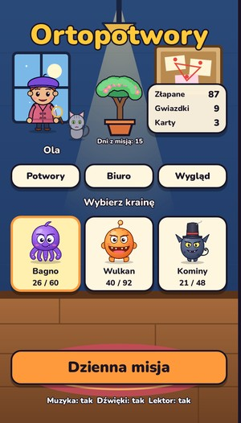
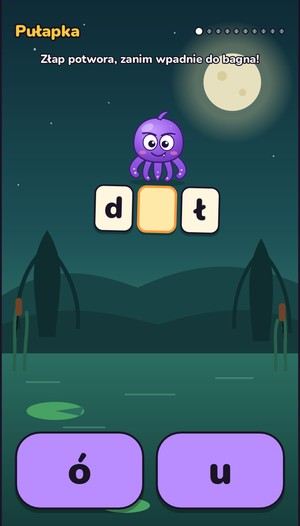
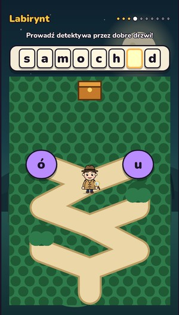
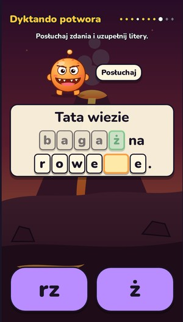
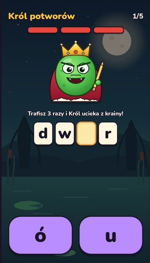
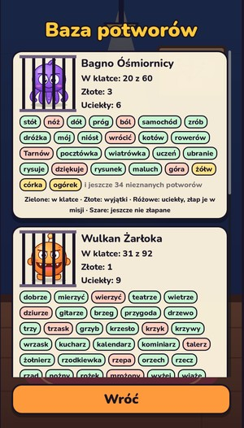
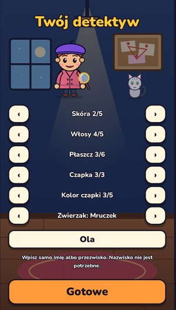
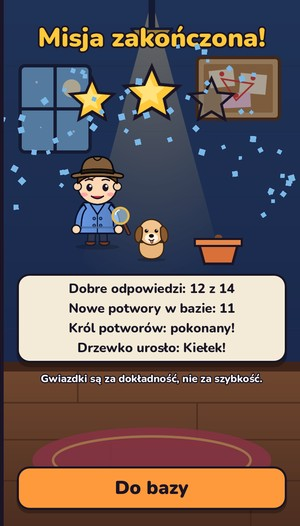

Ortopotwory
Detektywi ortografii
Gra do nauki ortografii: dziecko jako detektyw łapie potworki, które pomieszały litery ó/u, rz/ż i ch/h. Bez reklam i bez internetu.
- dla dzieci 7–12 lat
- bez reklam
- bez internetu
- bez zbierania danych

O grze
Złośliwe potworki pomieszały litery w Słowolandii. Óśmiornica z bagna, Żarłok z wulkanu i Chochlik z kominów podmieniają ó i u, rz i ż, ch i h. Dziecko jako ortodetektyw łapie je, poprawiając wyrazy.
Każdego dnia czeka krótka misja: kilka minigier na przemian i pojedynek z Królem potworów. Każda kraina zaczyna się komiksem z regułą, a wyrazy wracają w powtórkach po 1, 3, 7, 14 i 30 dniach, żeby zostały w pamięci na dłużej.
Gra nigdy nie pokazuje wyrazu z błędem. Brakująca litera to puste pole, a po odpowiedzi dziecko widzi tylko poprawną pisownię.
Co jest w grze
3 krainy, 200 wyrazów
Bagno (ó/u), Wulkan (rz/ż) i Kominy (ch/h). Każda kraina zaczyna się komiksem z regułą.
Minigry na zmianę
Pułapka, Lupa, Labirynt i Dyktando potwora, a na koniec misji Król potworów.
Powtórki w czasie
Wyraz wraca po 1, 3, 7, 14 i 30 dniach. Po błędzie wraca jutro.
Odcisk palca
Po błędzie dziecko obrysowuje wyraz palcem, a lektor go czyta. Ruch, wzrok i słuch razem.
Własny detektyw
Wygląd, zwierzak, baza złapanych potworów i biuro z ozdobami za gwiazdki.
Drzewko serii
Rośnie za każdy dzień z misją i nigdy nie usycha. Przerwa niczego nie zabiera.
Tak to wygląda








Dla rodziców
- Bez reklam, bez zbierania danych, działa offline. Gra nie prosi o żadne uprawnienia.
- Gra nigdy nie pokazuje wyrazu z błędem, więc dziecko nie utrwala złej pisowni.
- Strefa dla rodzica za bramką: raport postępów w każdej krainie i najtrudniejsze wyrazy. Wszystko liczone na telefonie.
- Gwiazdki są za dokładność, nie za szybkość. Ozdoby kupuje się za gwiazdki, bez prawdziwych pieniędzy i bez losowania.
- Detektyw ma tylko imię, bez nazwiska i zdjęcia. Akta sprawy dla starszych dzieci (10–12 lat) uczą uzasadniać pisownię regułą.
Ortopotwory: Spelling Detectives (English)
Mischievous monsters have mixed up the letters in Wordland. The Octopus from the swamp, the Glutton from the volcano and the Imp from the chimneys swap ó and u, rz and ż, ch and h. As a spelling detective, your child catches them by fixing the words.
Every day brings a short mission: a few alternating mini-games and a duel with the Monster King. Each land starts with a comic that explains the rule, and words come back for review after 1, 3, 7, 14 and 30 days so they stick.
The game never shows a misspelled word. The missing letter is an empty box, and after answering the child only ever sees the correct spelling.